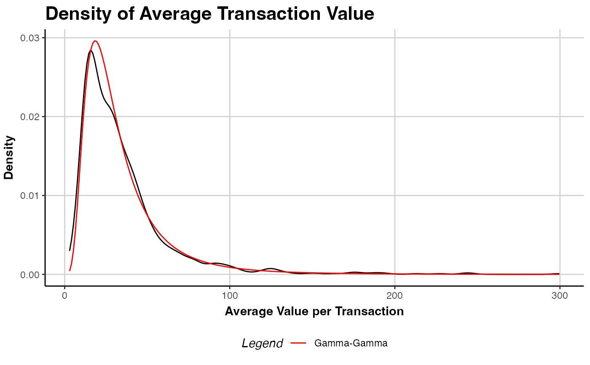

R/f_s3generics_clvfittedspending_plot.R
plot.clv.fitted.spending.RdCompares the density of the observed average spending per transaction (empirical distribution) to the
model's distribution of mean transaction spending (weighted by the actual number of transactions).
See plot.clv.data to plot more nuanced diagnostics for the transaction data only.
An object of class ggplot from package ggplot2 is returned by default.
Colombo R, Jiang W (1999). “A stochastic RFM model.” Journal of Interactive Marketing, 13(3), 2-12.
Fader PS, Hardie BG, Lee K (2005). “RFM and CLV: Using Iso-Value Curves for Customer Base Analysis.” Journal of Marketing Research, 42(4), 415-430.
Fader PS, Hardie BG (2013). “The Gamma-Gamma Model of Monetary Value.” URL http://www.brucehardie.com/notes/025/gamma_gamma.pdf.
# \donttest{
data("cdnow")
clv.cdnow <- clvdata(cdnow,
date.format="ymd",
time.unit = "week",
estimation.split = "1997-09-30")
est.gg <- gg(clv.data = clv.cdnow)
#> Starting estimation...
#> Estimation finished!
# Compare empirical to theoretical distribution
plot(est.gg)

if (FALSE) { # \dontrun{
# Modify the created plot further
library(ggplot2)
gg.cdnow <- plot(est.gg)
gg.cdnow + ggtitle("CDnow Spending Distribution")
} # }
# }